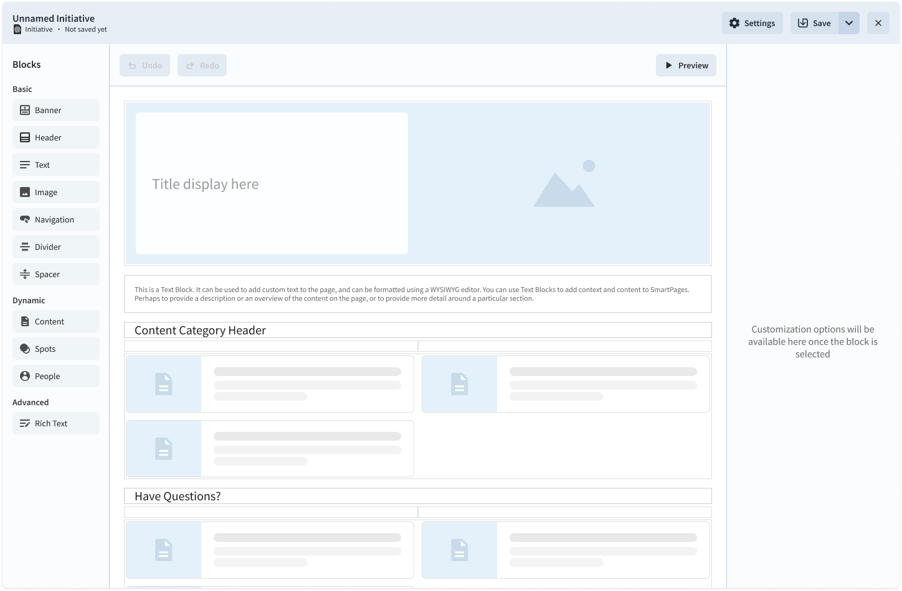
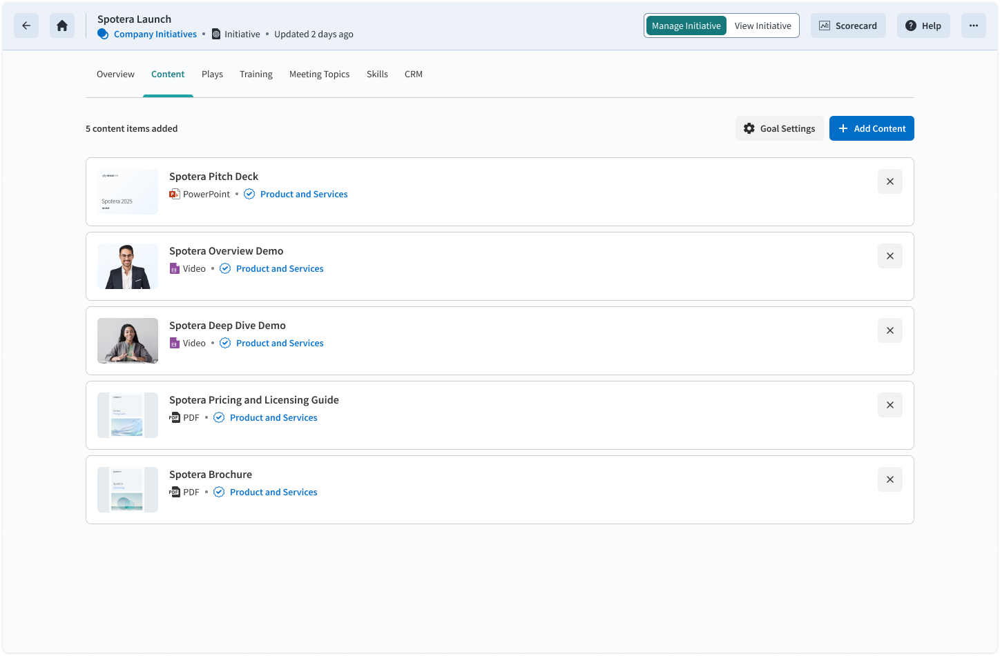
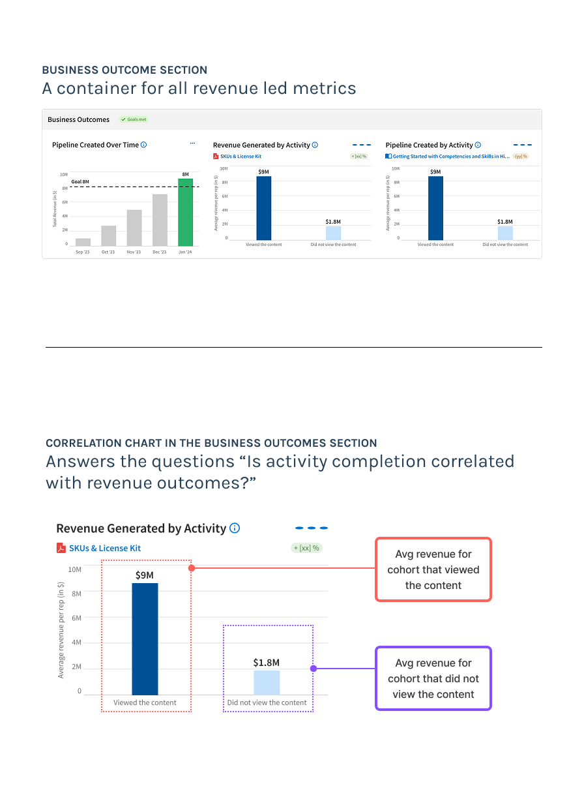

Go to market teams are investing without visibility into what's working
Teams invest in strategic initiatives — training programs, plays, conversation frameworks — but have no reliable way to know if any of it is actually working.
There is no reliable way to know whether reps are executing as expected, whether they are having the right conversations, or whether those activities are driving revenue.
GTM teams have no visibility into whether their strategy is driving revenue outcomes.
Taking the product from 0 to 1
I led this project from 0 to 1. There was no PM on the project at the start, and I had to pull the context to scope the work from sources scattered across internal personas in marketing, enablement, and revenue operations, customer-facing teams, and founders.
I used low-fidelity artefacts and design options as a context-gathering tool. I used them to surface assumptions, expose disagreements between stakeholders, and drive alignment.
After several months of stakeholder and customer conversations, I defined the product around three phases of running an initiative:
Define
Articulate the initiative and its strategic intent
Configure
Set goals and select the activities you want to measure
Track
Monitor progress through a live dashboard
The workflow gives teams the information they need to identify which activities to continue investing in and which to adjust.
After the project shipped, the team made a few pivots, documented below.
A couple of pivots after shipping
After the product shipped to a pilot cohort, customer feedback surfaced two areas where the design needed to change.
A blank-slate WYSIWYG editor made defining an initiative overwhelming. We replaced it with a structured drag-and-drop scaffold.
The correlation metric was valuable but hard to understand. We introduced "Business Drivers" to shift the mental model and close the comprehension gap.

Before — open WYSIWYG editor

After — structured drag-and-drop scaffolding
A blank slate and complete flexibility increased the effort of defining the initiative.
I originally scoped the initiative creation experience as a WYSIWYG editor. After the product shipped to a pilot cohort, customer feedback indicated the open-ended format was not working — users focused on formatting decisions rather than the strategic content of the initiative. I used that feedback to make the case for replacing the WYSIWYG with a structured drag-and-drop model.
Feedback from 10 customers in the pilot made the problem concrete:
Initiative owners said a blank slate was an overwhelming starting point
Did not expect to define the initiative in the WYSIWYG editor at all
Liked the WYSIWYG experience due to familiarity, but needed a template to reduce the number of decisions they had to make

Business Outcomes section — original framing
The correlation metric was hard to understand.
I introduced a metric in the scorecard to answer the question "Is completing an activity correlated with higher revenue outcomes?" I designed the metric to help teams differentiate high and low impact activities.
Customer feedback highlighted that the metric was valuable but hard to understand:
Customers understood the metric before we explained it to them
Loved the metric once they understood it
Customer research highlighted that the data was useful but the product wasn't doing a great job of communicating this to the user. I had placed the metric in a "Business Outcomes" section, where the revenue figure was the headline and the activity driving that revenue appeared as secondary text below it.
The team addressed the comprehension gap through customer onboarding conversations in the short term, but renaming the section to "Business Drivers" resolved the issue at the product level.
Renaming "Business Outcomes" to "Business Drivers" changed how customers read and used the data
Renaming the section from "Business Outcomes" to "Business Drivers" was more than a copy change. The new name shifted the mental model from revenue as the primary lens to activity as the driver of revenue, which required me to update chart labels, the configuration flow, and how the product presented the data to users.
| Business Outcomes | Business Drivers | |
|---|---|---|
| Model | Revenue leads, activity is context | Activity leads, revenue is proof |
| Chart reads | Avg. revenue: did vs. didn't | For this activity: revenue difference? |
| Configure flow | Pick metric → pick activity | Pick activity → revenue surfaces |

Before — "Business Outcomes" framing

After — "Activity" framing
Initiatives had measurable impact across customer events, sales pipeline, and product adoption
Keynote demo
The product was selected to demo at the opening keynote of Highspot's largest annual customer event
Customer adoption
2,231 Initiatives created across 495 unique Highspot domains
Causal chain validated
Customers configured all three components — rep enablement, customer engagement, and business outcomes — in 734 Initiatives, validating the causal chain I designed the product around
Influenced pipeline
Initiatives influenced 30% of active prospect pipeline — deals where buyers were actively discussing a Highspot purchase